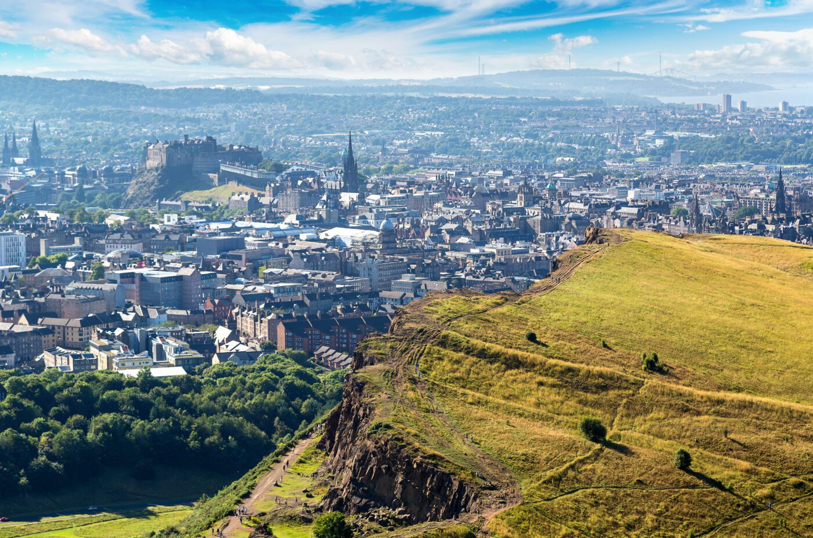
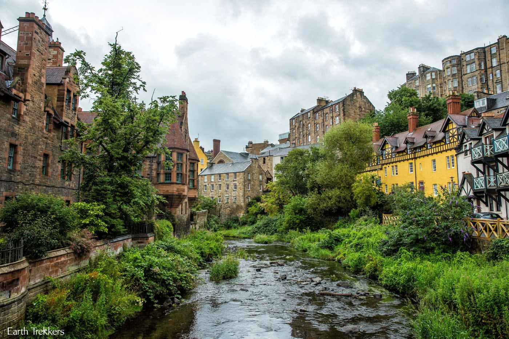
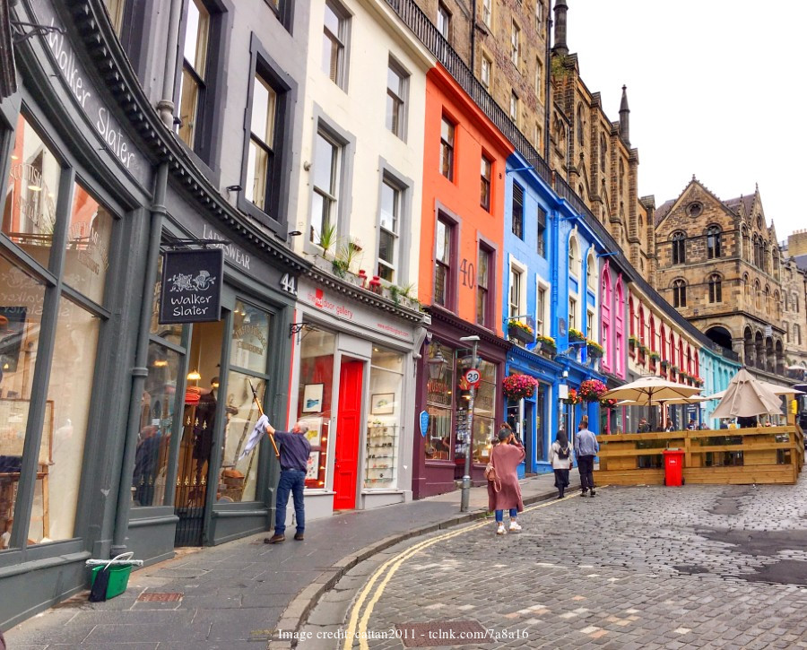
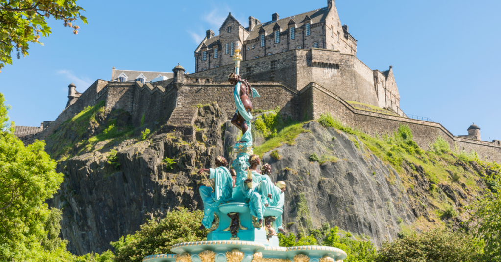
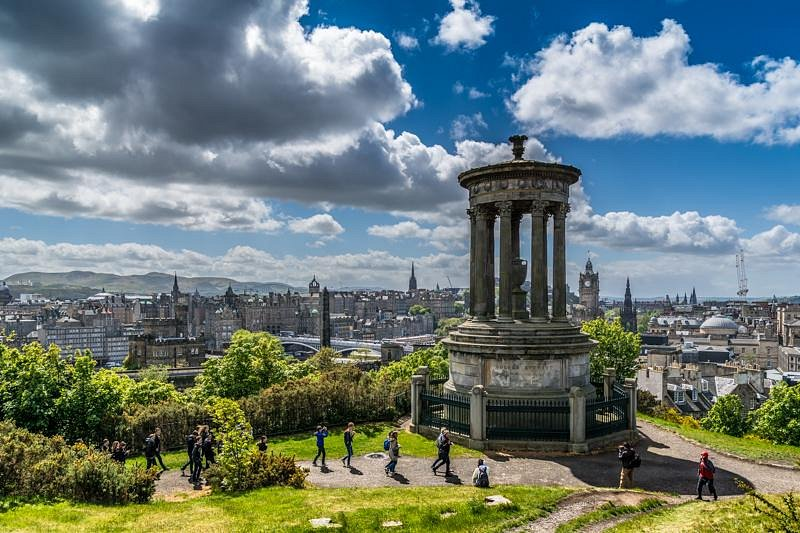

Edinburgh is so diverse - you can go hiking, do pottery, visit
bookshops and go to the beach all in the same day. Some popular
tourist attractions are listed below. Apart from this, don't forget to
explore the streets of Edinburgh and enter small shops and thirft
stores which can be hidden gems!
Arthur’s Seat

Arthur's Seat
Hike up Arthur's Seat for breathtaking views of the city. It takes
almost an hour but it is so worth it! You can try the route from
Holyrood park for an easier way to get up there. Holyrood park
also has swans and lots of trees and greenery!
Dean Village

Dean Village
Explore the quaint streets of Dean Village, a hidden, peaceful gem
in Edinburgh.
Royal Mile

Royal Mile
Walk down the historic Royal Mile, connecting Edinburgh Castle and
Holyrood Palace. You should definitely visit Victoria Street as
well and see all the colourful buildings! You might even find cute
Harry Potter stores along the way!
Edinburgh Castle

Edinburgh Castle
Visit the iconic Edinburgh Castle, perched on an extinct volcano.
You get great views of the city and learn more about the history
as well! I would also recommend visiting the Ross fountaina and
the adjoining Princes Gardens as well!
Calton Hill

Calton Hill
Climb Calton Hill for stunning views and to see the National
Monument of Scotland. I also saw the Northern Lights on it last
summer and it was one of the most beautiful sights!